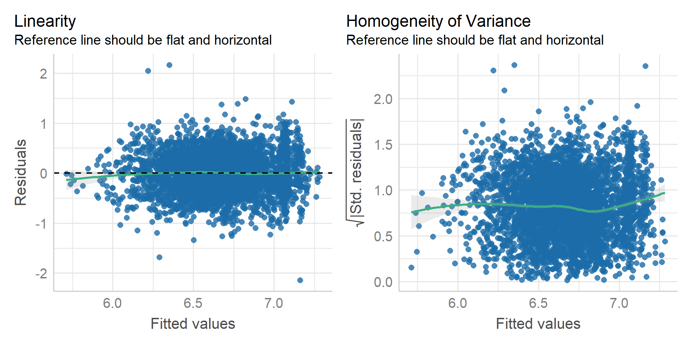

Panel Regression Analysis
Eduard Bukin
Recap
Ceteris paribus!?
- Why multiple regression is “good”?
- What variables are important when establishing a causal effect of a treatment (key variable)?
- What if we do not have an important variable?
Selection bias = OVB! In multiple regression analysis.
- What does OVB to our regression estimates?
- Bias (inconsistency) of estimates!
Simpson’s paradox
See: Simpson, E. H. (1951). The Interpretation of Interaction in Contingency Tables. Journal of the Royal Statistical Society: Series B (Methodological), 13(2), 238–241. https://doi.org/10.1111/j.2517-6161.1951.tb00088.x
Simpson’s paradox (with penguins)
Let us investigate…
The relationship between bill length and depth in penguins…

The data
Rows: 344
Columns: 8
$ species <fct> Adelie, Adelie, Adelie, Adelie, Adelie, Adelie, Adel…
$ island <fct> Torgersen, Torgersen, Torgersen, Torgersen, Torgerse…
$ bill_length_mm <dbl> 39.1, 39.5, 40.3, NA, 36.7, 39.3, 38.9, 39.2, 34.1, …
$ bill_depth_mm <dbl> 18.7, 17.4, 18.0, NA, 19.3, 20.6, 17.8, 19.6, 18.1, …
$ flipper_length_mm <int> 181, 186, 195, NA, 193, 190, 181, 195, 193, 190, 186…
$ body_mass_g <int> 3750, 3800, 3250, NA, 3450, 3650, 3625, 4675, 3475, …
$ sex <fct> male, female, female, NA, female, male, female, male…
$ year <int> 2007, 2007, 2007, 2007, 2007, 2007, 2007, 2007, 2007…The relationship
The trend
Is this the true trend?
The true trends
Regression results
fit1 <- lm(bill_depth_mm ~ bill_length_mm, data = penguins)
fit2 <- lm(bill_depth_mm ~ bill_length_mm + species, data = penguins)
fit3 <- lm(bill_depth_mm ~ -1 + bill_length_mm + species, data = penguins)
modelsummary(
list(fit1, fit2, fit3),
estimate = "{estimate}{stars} ({std.error})",
statistic = NULL,
gof_map = c("nobs", "adj.r.squared")
)| (1) | (2) | (3) | |
|---|---|---|---|
| (Intercept) | 20.885*** (0.844) | 10.592*** (0.683) | |
| bill_length_mm | −0.085*** (0.019) | 0.200*** (0.017) | 0.200*** (0.017) |
| speciesChinstrap | −1.933*** (0.224) | 8.659*** (0.862) | |
| speciesGentoo | −5.106*** (0.191) | 5.486*** (0.835) | |
| speciesAdelie | 10.592*** (0.683) | ||
| Num.Obs. | 342 | 342 | 342 |
| R2 Adj. | 0.052 | 0.767 | 0.997 |
Simpson’s paradox conclusion
Trends or relationships are observed in the whole population, but they reverse or disappear, when each group is treated separately.
Causes:
Unobserved heterogeneity/differences between groups.
Underlining processes that are different between parts of the population.
Resolutions to the paradox:
Control variables in the MRL.
Panel data.
Data Types
Cross-sectional data
| ID | Y | X1 | X2 |
|---|---|---|---|
| \(1\) | \(y_{1}\) | \(x^{1}_{1}\) | \(x^{2}_{1}\) |
| \(2\) | \(y_{2}\) | \(x^{1}_{2}\) | \(x^{2}_{2}\) |
| \(3\) | \(y_{3}\) | \(x^{1}_{3}\) | \(x^{2}_{3}\) |
| \(4\) | \(y_{4}\) | \(x^{1}_{4}\) | \(x^{2}_{4}\) |
| \(5\) | \(y_{5}\) | \(x^{1}_{5}\) | \(x^{2}_{5}\) |
| \(6\) | \(y_{6}\) | \(x^{1}_{6}\) | \(x^{2}_{6}\) |
| \(\vdots\) | \(\vdots\) | \(\vdots\) | \(\vdots\) |
| \(N\) | \(y_{N}\) | \(x^{1}_{N}\) | \(x^{2}_{N}\) |
Data that we usually collect in a single data collection.
- Each individual is represented by one observation.
Could be repeatedly collected multiple times (repeated cross-section),
- but, in every repetition, there are different individuals!
Panel data
| ID | Time | Y | X1 | X2 |
|---|---|---|---|---|
| \(1\) | \(1\) | \(y_{11}\) | \(x^{1}_{11}\) | \(x^{2}_{11}\) |
| \(1\) | \(2\) | \(y_{12}\) | \(x^{1}_{12}\) | \(x^{2}_{12}\) |
| \(1\) | \(3\) | \(y_{13}\) | \(x^{1}_{13}\) | \(x^{2}_{13}\) |
| \(2\) | \(2\) | \(y_{22}\) | \(x^{1}_{22}\) | \(x^{2}_{22}\) |
| \(2\) | \(3\) | \(y_{23}\) | \(x^{1}_{23}\) | \(x^{2}_{23}\) |
| \(3\) | \(1\) | \(y_{31}\) | \(x^{1}_{31}\) | \(x^{2}_{31}\) |
| \(3\) | \(2\) | \(y_{32}\) | \(x^{1}_{32}\) | \(x^{2}_{32}\) |
| \(\vdots\) | \(\vdots\) | \(\vdots\) | \(\vdots\) | \(\vdots\) |
| \(N\) | \(1\) | \(y_{N1}\) | \(x^{1}_{N1}\) | \(x^{1}_{N1}\) |
| \(\vdots\) | \(\vdots\) | \(\vdots\) | \(\vdots\) | \(\vdots\) |
| \(N\) | \(T\) | \(y_{NT}\) | \(x^{1}_{NT}\) | \(x^{2}_{NT}\) |
table with data, where
each individual (cohort, e.i. region, country)
is represented by multiple observations at different time periods.
Panel data: Balanced and Unbalanced
Balanced
Each individual is represented in all time periods.
| \(\text{ID}\) | \(\text{Time}\) | \(Y\) | \(X\) |
|---|---|---|---|
| 1 | 1 | \(Y_{11}\) | \(X_{11}\) |
| 1 | 2 | \(Y_{12}\) | \(X_{12}\) |
| \(\vdots\) | \(\vdots\) | \(\vdots\) | \(\vdots\) |
| 1 | \(T\) | \(Y_{1T}\) | \(X_{1T}\) |
| 2 | 1 | \(Y_{21}\) | \(X_{21}\) |
| 2 | 2 | \(Y_{22}\) | \(X_{22}\) |
| \(\vdots\) | \(\vdots\) | \(\vdots\) | \(\vdots\) |
| 2 | \(T\) | \(Y_{2T}\) | \(X_{2T}\) |
| 3 | 1 | \(Y_{31}\) | \(X_{31}\) |
| \(\vdots\) | \(\vdots\) | \(\vdots\) | \(\vdots\) |
| \(N\) | \(T\) | \(Y_{NT}\) | \(X_{NT}\) |
Un balanced
Each individual only appears in some time periods (not all).
| \(\text{ID}\) | \(\text{Time}\) | \(Y\) | \(X\) |
|---|---|---|---|
| 1 | 1 | \(Y_{11}\) | \(X_{11}\) |
| 1 | 2 | \(Y_{12}\) | \(X_{12}\) |
| 2 | 2 | \(Y_{22}\) | \(X_{22}\) |
| 2 | 3 | \(Y_{23}\) | \(X_{23}\) |
| 3 | 3 | \(Y_{33}\) | \(X_{33}\) |
| 4 | 1 | \(Y_{41}\) | \(X_{41}\) |
| 5 | 2 | \(Y_{52}\) | \(X_{52}\) |
| \(\vdots\) | \(\vdots\) | \(\vdots\) | \(\vdots\) |
| \(N\) | \(T\) | \(Y_{NT}\) | \(X_{NT}\) |
Regressions with Panel Data
Important
is a strategy to control for unobserved/omitted but fixed heterogeneity using time or cohort (individual) dimensions.
There are:
Pooled regression
Least-squares dummy variable (LSDV) model
Fixed Effect Panel Regression (within, first-difference and between)
Random Effect Panel Regression
Example 1: Effect of an employee’s union membership on wage
Problem setting
Does the collective bargaining (union membership) has any effect on wages?
- See: (Card, 1996; Freeman, 1984)
\[ log(\text{Wage}_{it}) = \beta_0 + \beta_1 \cdot \text{Union}_{it} + \beta_2 \cdot {X_{it}} + \beta_3 \cdot \text{Ability}_{i} + \epsilon_{it} \]
where \(i\) is the individual and \(t\) is the time dimension;
Is there an endogeneity problem?
\[ log(\text{Wage}_{it}) = \beta_0 + \beta_1 \cdot \text{Union}_{it} + \beta_2 \cdot {X_{it}} + \beta_3 \cdot \text{Ability}_{i} + \epsilon_{it} \]
Is there a source of endogeneity / selection bias here?
- Any ideas?
\(\text{Ability}_{i}\) not observable and not measurable;
- time invariant;
- correlates with \(X\) and \(Y\);
Omitting ability causes bias
One of the solutions:
Ability are time-invariant and unique to each individual;
If we have multiple observation per each individual (panel data),
we can introduce dummy variables for each individual, to approximate ability.
This is also called Fixed Effect - regression model
or a within transformation model
or Difference in Difference
Other solutions:
Any ideas?
Introduce control variables that are proxy of ability.
Employ specific research design:
RCT
RDD
Empirical example
Rows: 4,165
Columns: 15
$ id <dbl> 1, 1, 1, 1, 1, 1, 1, 2, 2, 2, 2, 2, 2, 2, 3, 3, 3, 3, 3, 3, 3,…
$ year <dbl> 82, 83, 84, 85, 86, 87, 88, 82, 83, 84, 85, 86, 87, 88, 82, 83…
$ exper <dbl> 3, 4, 5, 6, 7, 8, 9, 30, 31, 32, 33, 34, 35, 36, 6, 7, 8, 9, 1…
$ hours <dbl> 32, 43, 40, 39, 42, 35, 32, 34, 27, 33, 30, 30, 37, 30, 50, 51…
$ bluecol <chr> "no", "no", "no", "no", "no", "no", "no", "yes", "yes", "yes",…
$ ind <dbl> 0, 0, 0, 0, 1, 1, 1, 0, 0, 1, 1, 1, 1, 1, 1, 1, 1, 1, 1, 1, 1,…
$ south <chr> "yes", "yes", "yes", "yes", "yes", "yes", "yes", "no", "no", "…
$ smsa <chr> "no", "no", "no", "no", "no", "no", "no", "no", "no", "no", "n…
$ married <chr> "yes", "yes", "yes", "yes", "yes", "yes", "yes", "yes", "yes",…
$ union <dbl> 0, 0, 0, 0, 0, 0, 0, 0, 0, 1, 0, 0, 0, 0, 1, 1, 1, 1, 1, 1, 1,…
$ educ <dbl> 9, 9, 9, 9, 9, 9, 9, 11, 11, 11, 11, 11, 11, 11, 12, 12, 12, 1…
$ black <chr> "no", "no", "no", "no", "no", "no", "no", "no", "no", "no", "n…
$ lwage <dbl> 5.56068, 5.72031, 5.99645, 5.99645, 6.06146, 6.17379, 6.24417,…
$ female <dbl> 1, 1, 1, 1, 1, 1, 1, 1, 1, 1, 1, 1, 1, 1, 1, 1, 1, 1, 1, 1, 1,…
$ wage <dbl> 259.9996, 304.9995, 401.9992, 401.9992, 429.0013, 480.0019, 51…The data
| id | year | exper | hours | bluecol | ind | south | smsa | married | union | educ | black | lwage | female | wage |
|---|---|---|---|---|---|---|---|---|---|---|---|---|---|---|
| 5 | 82 | 10 | 50 | yes | 0 | no | no | yes | 1 | 16 | no | 6.43775 | 1 | 624.9990 |
| 5 | 83 | 11 | 46 | yes | 0 | no | no | yes | 1 | 16 | no | 6.62007 | 1 | 749.9976 |
| 5 | 84 | 12 | 40 | yes | 0 | no | no | yes | 1 | 16 | no | 6.63332 | 1 | 760.0012 |
| 5 | 85 | 13 | 50 | no | 0 | no | no | yes | 0 | 16 | no | 6.98286 | 1 | 1077.9970 |
| 5 | 86 | 14 | 47 | yes | 0 | no | yes | yes | 0 | 16 | no | 7.04752 | 1 | 1150.0032 |
| 5 | 87 | 15 | 47 | no | 0 | no | no | yes | 0 | 16 | no | 7.31322 | 1 | 1499.9994 |
| 5 | 88 | 16 | 49 | no | 0 | no | no | yes | 0 | 16 | no | 7.29574 | 1 | 1474.0073 |
| 168 | 82 | 3 | 40 | no | 0 | no | yes | yes | 0 | 17 | no | 6.23245 | 1 | 509.0010 |
| 168 | 83 | 4 | 42 | no | 0 | no | yes | yes | 0 | 17 | no | 6.57925 | 1 | 719.9991 |
| 168 | 84 | 5 | 44 | no | 0 | no | yes | yes | 1 | 17 | no | 6.65286 | 1 | 774.9977 |
| 168 | 85 | 6 | 48 | no | 0 | no | yes | yes | 1 | 17 | no | 6.74524 | 1 | 850.0031 |
| 168 | 86 | 7 | 48 | no | 0 | no | yes | yes | 0 | 17 | no | 7.49554 | 1 | 1799.9965 |
| 168 | 87 | 8 | 48 | no | 0 | no | yes | yes | 0 | 17 | no | 8.16052 | 1 | 3500.0061 |
| 168 | 88 | 9 | 50 | no | 0 | no | yes | yes | 0 | 17 | no | 8.30820 | 1 | 4057.0038 |
Pooled Regression
\[ log(\text{Wage}_{it}) = \beta_0 + \beta_1 \cdot \text{Union}_{it} + \beta_2 \cdot {X_{it}} + \epsilon_{it} \]
- Regression model on all observations in the panel data set without any individual effects.
Call:
lm(formula = log(wage) ~ union + educ + exper + I(exper^2) +
hours, data = wage_dta)
Coefficients:
(Intercept) union educ exper I(exper^2) hours
4.7054380 0.1261467 0.0819744 0.0437155 -0.0006932 0.0077042 Least-squares dummy variable (LSDV)
\[ log(\text{Wage}_{it}) = \beta_0 + \beta_1 \cdot \text{Union}_{it} + \beta_2 \cdot {X_{it}} + \beta_3 \cdot \color{Red}{\delta_{i}} + \epsilon_{it} \]
Pooled regression plus dummy variable for each individual.
This is not a Fixed Effect Panel Regression!
Call:
lm(formula = log(wage) ~ union + educ + exper + I(exper^2) +
hours + factor(id), data = wage_dta)
Coefficients:
(Intercept) union educ exper I(exper^2)
4.3485732 0.0300295 0.1023231 0.1137052 -0.0004234
hours factor(id)2 factor(id)3 factor(id)4 factor(id)5
0.0007980 -2.2946317 -0.1234092 -2.3978310 -0.5366805
factor(id)6 factor(id)7 factor(id)8 factor(id)9 factor(id)10
-1.4597761 -1.2411420 -1.5180049 0.2078530 -0.1734390
factor(id)11 factor(id)12 factor(id)13 factor(id)14 factor(id)15
-1.4704689 -1.3608691 -1.3890339 -1.0439450 -0.9439428
factor(id)16 factor(id)17 factor(id)18 factor(id)19 factor(id)20
-1.5809655 -0.9700846 -1.3922150 -3.0892451 -1.8367302
factor(id)21 factor(id)22 factor(id)23 factor(id)24 factor(id)25
-1.7226414 -1.4223248 0.0054199 -0.8357823 -0.6064977
factor(id)26 factor(id)27 factor(id)28 factor(id)29 factor(id)30
-0.7379286 -0.2772751 -1.8216457 -1.8871665 -1.3042601
factor(id)31 factor(id)32 factor(id)33 factor(id)34 factor(id)35
-1.4134898 -1.8734643 -0.6413820 -3.7105381 -0.1984895
factor(id)36 factor(id)37 factor(id)38 factor(id)39 factor(id)40
-0.3421001 -0.3410200 -0.7597065 -0.0688068 -1.7787978
factor(id)41 factor(id)42 factor(id)43 factor(id)44 factor(id)45
-1.0532843 -2.2573678 0.1550164 0.0478652 -0.9543507
factor(id)46 factor(id)47 factor(id)48 factor(id)49 factor(id)50
-0.2541933 -1.7069053 -1.8137723 -1.9258846 -2.4484643
factor(id)51 factor(id)52 factor(id)53 factor(id)54 factor(id)55
-1.9760363 -1.6064527 -0.4646712 -0.4521180 -1.7422486
factor(id)56 factor(id)57 factor(id)58 factor(id)59 factor(id)60
-1.9282946 -1.6643194 -2.8323912 -1.7329928 -1.6527519
factor(id)61 factor(id)62 factor(id)63 factor(id)64 factor(id)65
-1.9914748 -0.1579195 -0.2806420 -2.6926172 -1.7074951
factor(id)66 factor(id)67 factor(id)68 factor(id)69 factor(id)70
-1.0021172 -2.5046091 -2.5941980 -2.0777134 -0.4562135
factor(id)71 factor(id)72 factor(id)73 factor(id)74 factor(id)75
-0.0984012 -0.9192300 -0.9709685 -0.7050966 -1.7193154
factor(id)76 factor(id)77 factor(id)78 factor(id)79 factor(id)80
-1.1672133 -0.7934024 -3.4592869 -0.8823052 -0.0604197
factor(id)81 factor(id)82 factor(id)83 factor(id)84 factor(id)85
-0.2728831 -1.3694580 -0.8873794 -3.4094508 -0.6181149
factor(id)86 factor(id)87 factor(id)88 factor(id)89 factor(id)90
0.3230099 -0.6208690 -0.0384965 -0.7156531 0.2819298
factor(id)91 factor(id)92 factor(id)93 factor(id)94 factor(id)95
0.2219382 -0.0389122 -2.2703900 -0.6713527 -2.5658913
factor(id)96 factor(id)97 factor(id)98 factor(id)99 factor(id)100
-1.8929945 -2.3668088 -1.0815051 -1.2371669 -0.3689453
factor(id)101 factor(id)102 factor(id)103 factor(id)104 factor(id)105
-2.0715701 0.2419079 -1.0534000 -1.2417073 -0.3892415
factor(id)106 factor(id)107 factor(id)108 factor(id)109 factor(id)110
0.0013452 -1.8143890 -0.9852634 -1.4033012 -2.7813619
factor(id)111 factor(id)112 factor(id)113 factor(id)114 factor(id)115
-0.1122968 -0.8453668 -1.8469750 -2.9350313 -0.4420842
factor(id)116 factor(id)117 factor(id)118 factor(id)119 factor(id)120
-0.7258607 -1.2304082 -1.3950810 -0.3204476 -0.7104122
factor(id)121 factor(id)122 factor(id)123 factor(id)124 factor(id)125
-0.3685394 -0.6871320 -1.5356558 -1.9044675 -0.9214093
factor(id)126 factor(id)127 factor(id)128 factor(id)129 factor(id)130
0.1863200 -1.8088881 -2.3404805 -2.3327080 -1.8672439
factor(id)131 factor(id)132 factor(id)133 factor(id)134 factor(id)135
-1.7733156 -1.2515247 -1.2618072 -0.2715418 -0.5405965
factor(id)136 factor(id)137 factor(id)138 factor(id)139 factor(id)140
-0.9040781 -1.2464677 -1.3348897 0.0546240 -0.1468334
factor(id)141 factor(id)142 factor(id)143 factor(id)144 factor(id)145
-0.9653104 -2.8803152 -2.5587496 -0.3057205 -1.1895399
factor(id)146 factor(id)147 factor(id)148 factor(id)149 factor(id)150
-2.5564297 -0.3336869 -0.2135711 -0.2358201 -0.9902041
factor(id)151 factor(id)152 factor(id)153 factor(id)154 factor(id)155
-1.8371688 -0.3919091 -0.9059245 -0.8288426 0.2639585
factor(id)156 factor(id)157 factor(id)158 factor(id)159 factor(id)160
-2.3669688 -0.1579770 -1.9607783 -2.2903756 -2.0867318
factor(id)161 factor(id)162 factor(id)163 factor(id)164 factor(id)165
-0.4052899 -0.5879060 -0.7129091 -0.5237673 -3.0691480
factor(id)166 factor(id)167 factor(id)168 factor(id)169 factor(id)170
-0.3346194 -1.2951818 0.3693013 -1.6563817 -2.1460479
factor(id)171 factor(id)172 factor(id)173 factor(id)174 factor(id)175
-1.0321605 -0.2130777 -1.7902925 0.1377581 -0.0160055
factor(id)176 factor(id)177 factor(id)178 factor(id)179 factor(id)180
0.2569786 -1.6326400 0.4028510 -2.3587711 -0.3845946
factor(id)181 factor(id)182 factor(id)183 factor(id)184 factor(id)185
-0.4108327 -0.9834346 -1.0972550 -1.6781968 -1.5026082
factor(id)186 factor(id)187 factor(id)188 factor(id)189 factor(id)190
-2.1577766 -1.1647283 -0.1239156 -1.7815425 0.2619762
factor(id)191 factor(id)192 factor(id)193 factor(id)194 factor(id)195
-1.4993833 0.0160729 -2.2211180 -0.4287428 -0.8272276
factor(id)196 factor(id)197 factor(id)198 factor(id)199 factor(id)200
0.1178582 -1.5464632 -1.9258471 -0.1875497 -0.3310429
factor(id)201 factor(id)202 factor(id)203 factor(id)204 factor(id)205
-1.4934470 -0.5369335 -1.5108323 -2.0658719 -1.6709767
factor(id)206 factor(id)207 factor(id)208 factor(id)209 factor(id)210
-0.0090120 -0.5221725 -1.6804807 -2.0796591 -2.0767268
factor(id)211 factor(id)212 factor(id)213 factor(id)214 factor(id)215
-1.4748328 -0.0448817 -1.4898530 -1.9329652 -3.5076699
factor(id)216 factor(id)217 factor(id)218 factor(id)219 factor(id)220
-1.1255642 -0.2327264 -0.6513809 -0.8178650 -2.4156438
factor(id)221 factor(id)222 factor(id)223 factor(id)224 factor(id)225
-2.1017309 0.0331950 -1.0231728 -1.4645738 -0.5458016
factor(id)226 factor(id)227 factor(id)228 factor(id)229 factor(id)230
-3.0261551 -2.2929047 0.2832356 -1.3169281 0.2964316
factor(id)231 factor(id)232 factor(id)233 factor(id)234 factor(id)235
-1.0946220 -2.2743788 -1.8237789 -1.6554734 -1.2081230
factor(id)236 factor(id)237 factor(id)238 factor(id)239 factor(id)240
-0.0145449 -0.6384647 -2.1569987 -1.4416687 -2.0393688
factor(id)241 factor(id)242 factor(id)243 factor(id)244 factor(id)245
-0.5874512 -0.5934676 0.2367489 -1.4340693 -2.3045132
factor(id)246 factor(id)247 factor(id)248 factor(id)249 factor(id)250
-2.7880182 -0.7003395 -1.1107962 -2.4985511 -1.3364049
factor(id)251 factor(id)252 factor(id)253 factor(id)254 factor(id)255
-0.6067969 -1.5576645 -0.0986338 -2.6540530 0.0383125
factor(id)256 factor(id)257 factor(id)258 factor(id)259 factor(id)260
-0.2349775 -2.1928398 -2.3075449 -0.7143545 -0.1095476
factor(id)261 factor(id)262 factor(id)263 factor(id)264 factor(id)265
-0.7968060 -0.5774167 -0.6080097 -0.1404218 -0.6091514
factor(id)266 factor(id)267 factor(id)268 factor(id)269 factor(id)270
-1.5381684 -0.6415396 -0.8257309 -0.9420411 -0.8422041
factor(id)271 factor(id)272 factor(id)273 factor(id)274 factor(id)275
-0.4524016 -0.2456966 -1.7472768 -1.0506405 -0.0310502
factor(id)276 factor(id)277 factor(id)278 factor(id)279 factor(id)280
0.3472376 -2.0224341 0.1895913 -0.6614986 -2.7705095
factor(id)281 factor(id)282 factor(id)283 factor(id)284 factor(id)285
0.2245524 -1.3899214 -2.7102791 -2.2411764 0.2478444
factor(id)286 factor(id)287 factor(id)288 factor(id)289 factor(id)290
-0.3704373 -0.5927907 -0.2396347 -1.6533998 -0.0958892
factor(id)291 factor(id)292 factor(id)293 factor(id)294 factor(id)295
-2.5107176 -1.7989286 -0.5703390 -1.2011109 -1.4576638
factor(id)296 factor(id)297 factor(id)298 factor(id)299 factor(id)300
-1.9986368 -0.5870901 -0.7176117 -3.2822239 -2.7838597
factor(id)301 factor(id)302 factor(id)303 factor(id)304 factor(id)305
-0.3324034 -1.0640144 0.2979783 -0.4636494 -1.1197335
factor(id)306 factor(id)307 factor(id)308 factor(id)309 factor(id)310
-1.2954014 0.8212389 -1.8036660 -1.3745703 -0.7606135
factor(id)311 factor(id)312 factor(id)313 factor(id)314 factor(id)315
0.2105132 -0.8752712 -0.6629730 -0.4802000 -1.0600291
factor(id)316 factor(id)317 factor(id)318 factor(id)319 factor(id)320
-1.9089897 -0.9238980 -0.6972992 -1.6439082 -0.9770545
factor(id)321 factor(id)322 factor(id)323 factor(id)324 factor(id)325
-0.2597240 -0.3929224 -0.8099876 0.2160266 -3.1693716
factor(id)326 factor(id)327 factor(id)328 factor(id)329 factor(id)330
-1.3707289 -0.8099548 -1.9741880 -3.2232714 -2.9081193
factor(id)331 factor(id)332 factor(id)333 factor(id)334 factor(id)335
-2.4720627 -3.4967480 0.0880504 -2.4198878 -2.0780789
factor(id)336 factor(id)337 factor(id)338 factor(id)339 factor(id)340
-2.3475630 0.5764727 -0.6084878 -0.8872653 -1.9636734
factor(id)341 factor(id)342 factor(id)343 factor(id)344 factor(id)345
0.0883837 -1.8502495 -1.4848842 -0.9710595 -1.2319603
factor(id)346 factor(id)347 factor(id)348 factor(id)349 factor(id)350
-1.7024146 -1.3434399 -1.3863174 0.4956454 -2.5654191
factor(id)351 factor(id)352 factor(id)353 factor(id)354 factor(id)355
-1.3784243 0.0816134 -1.7059876 -1.3627206 -0.4565893
factor(id)356 factor(id)357 factor(id)358 factor(id)359 factor(id)360
0.3603776 -0.9685689 -1.3991295 -3.0412550 -1.6851473
factor(id)361 factor(id)362 factor(id)363 factor(id)364 factor(id)365
-0.7058692 -0.9195798 -1.0953487 -1.4769641 -2.6742985
factor(id)366 factor(id)367 factor(id)368 factor(id)369 factor(id)370
-0.6578946 -1.2999971 -0.3382028 0.3863243 -0.0720030
factor(id)371 factor(id)372 factor(id)373 factor(id)374 factor(id)375
-1.9432209 -0.6223422 -1.1822873 -0.9548354 -2.0004202
factor(id)376 factor(id)377 factor(id)378 factor(id)379 factor(id)380
-1.9659526 -1.0630786 0.2863626 -0.9885524 -2.2528915
factor(id)381 factor(id)382 factor(id)383 factor(id)384 factor(id)385
-1.8595097 -1.5724380 -1.8713639 -2.5344664 -0.1624537
factor(id)386 factor(id)387 factor(id)388 factor(id)389 factor(id)390
-0.6421035 -0.3629400 -2.3279087 -1.1232122 -1.7657519
factor(id)391 factor(id)392 factor(id)393 factor(id)394 factor(id)395
-2.5207200 -1.6091356 -0.8136357 0.2210733 -2.2452954
factor(id)396 factor(id)397 factor(id)398 factor(id)399 factor(id)400
-0.6756564 0.1621353 -0.8481867 -1.7341285 -0.3817257
factor(id)401 factor(id)402 factor(id)403 factor(id)404 factor(id)405
0.2949123 -0.8927519 -0.9338798 -0.7166768 0.3456415
factor(id)406 factor(id)407 factor(id)408 factor(id)409 factor(id)410
0.2419052 -1.8216061 -0.4228484 -2.9393318 -2.0225911
factor(id)411 factor(id)412 factor(id)413 factor(id)414 factor(id)415
-0.4310985 0.4951506 -0.3954707 -2.8343863 -1.6226128
factor(id)416 factor(id)417 factor(id)418 factor(id)419 factor(id)420
-2.2101251 -0.3836277 -2.0551281 -0.3642385 -0.4022928
factor(id)421 factor(id)422 factor(id)423 factor(id)424 factor(id)425
-1.4834110 -0.5625562 -0.6107236 0.1691667 0.3211209
factor(id)426 factor(id)427 factor(id)428 factor(id)429 factor(id)430
0.2279390 -1.8875790 -3.0841075 -0.6159943 -0.3415796
factor(id)431 factor(id)432 factor(id)433 factor(id)434 factor(id)435
-0.7118149 -1.5641616 -1.9801839 0.1450722 -0.2017439
factor(id)436 factor(id)437 factor(id)438 factor(id)439 factor(id)440
-0.3145338 -1.1190083 -1.7823379 -0.3957654 -0.9003941
factor(id)441 factor(id)442 factor(id)443 factor(id)444 factor(id)445
-2.3437182 -3.4028128 -1.7003478 0.7524891 -1.0873692
factor(id)446 factor(id)447 factor(id)448 factor(id)449 factor(id)450
-0.5228583 -1.8009627 -2.2900269 -0.2715184 0.1416728
factor(id)451 factor(id)452 factor(id)453 factor(id)454 factor(id)455
-0.3214500 -0.7690325 -2.2657456 -0.0174455 -1.6515788
factor(id)456 factor(id)457 factor(id)458 factor(id)459 factor(id)460
-1.4418559 -2.8946224 -0.9420793 -1.4296444 0.1185207
factor(id)461 factor(id)462 factor(id)463 factor(id)464 factor(id)465
-2.2330238 -2.5544505 -0.9337258 -3.5688408 -0.2714708
factor(id)466 factor(id)467 factor(id)468 factor(id)469 factor(id)470
-2.2471530 -1.8575604 -3.0165280 -4.3707337 -0.1020631
factor(id)471 factor(id)472 factor(id)473 factor(id)474 factor(id)475
-2.2962452 -0.4362524 -0.0682312 -0.7113828 -0.6509739
factor(id)476 factor(id)477 factor(id)478 factor(id)479 factor(id)480
-2.2159030 -0.3722269 -0.1277137 -0.8617902 -1.3784264
factor(id)481 factor(id)482 factor(id)483 factor(id)484 factor(id)485
-1.2668125 -0.3221145 -0.3694822 0.3742597 -1.1971520
factor(id)486 factor(id)487 factor(id)488 factor(id)489 factor(id)490
-1.7667638 -0.3340940 -1.7205133 -2.2568467 -1.8137394
factor(id)491 factor(id)492 factor(id)493 factor(id)494 factor(id)495
-0.0582747 -1.9190715 -0.6342174 -3.6974693 -0.3921098
factor(id)496 factor(id)497 factor(id)498 factor(id)499 factor(id)500
-1.5298775 -0.5476525 -1.4930554 -2.5228905 -0.2511241
factor(id)501 factor(id)502 factor(id)503 factor(id)504 factor(id)505
-2.0783921 -1.0366267 0.3891613 -0.0326843 -1.4013691
factor(id)506 factor(id)507 factor(id)508 factor(id)509 factor(id)510
0.1109218 -1.7455372 -2.6679473 -1.1284840 0.1729925
factor(id)511 factor(id)512 factor(id)513 factor(id)514 factor(id)515
-0.8348753 0.4589049 -2.5682984 -0.9878010 -0.5940622
factor(id)516 factor(id)517 factor(id)518 factor(id)519 factor(id)520
-1.7425469 -0.8692734 -1.1061395 -0.2754527 -2.0568223
factor(id)521 factor(id)522 factor(id)523 factor(id)524 factor(id)525
-1.2248788 0.4854992 0.3539625 -0.4260779 -0.6468819
factor(id)526 factor(id)527 factor(id)528 factor(id)529 factor(id)530
-0.0903952 -0.2045723 -0.4261753 -2.0586098 -0.1378354
factor(id)531 factor(id)532 factor(id)533 factor(id)534 factor(id)535
0.5090071 -0.3524712 -2.7228941 -0.5025199 -1.0624910
factor(id)536 factor(id)537 factor(id)538 factor(id)539 factor(id)540
-0.3035858 -0.4137570 -0.5286483 0.1598279 -1.4470984
factor(id)541 factor(id)542 factor(id)543 factor(id)544 factor(id)545
-0.3111554 -1.0187912 -0.1758000 0.3356895 -2.5147919
factor(id)546 factor(id)547 factor(id)548 factor(id)549 factor(id)550
-0.2690522 0.0699535 -0.3780972 -0.5916537 -0.1192377
factor(id)551 factor(id)552 factor(id)553 factor(id)554 factor(id)555
-0.4489108 -0.5228657 -0.2531003 -1.4951698 -1.6801842
factor(id)556 factor(id)557 factor(id)558 factor(id)559 factor(id)560
0.3760810 -1.0286751 -1.1760088 -3.2089989 -2.5710271
factor(id)561 factor(id)562 factor(id)563 factor(id)564 factor(id)565
0.0315641 0.1818021 -2.2825744 0.0822954 -1.1950727
factor(id)566 factor(id)567 factor(id)568 factor(id)569 factor(id)570
0.1940021 -3.5865482 -0.2442893 -1.0425527 -0.7318057
factor(id)571 factor(id)572 factor(id)573 factor(id)574 factor(id)575
-0.0624118 0.0528832 -0.1803426 0.2557702 -0.6287755
factor(id)576 factor(id)577 factor(id)578 factor(id)579 factor(id)580
0.2609783 -0.8120050 -0.0670469 -0.4403119 0.0559130
factor(id)581 factor(id)582 factor(id)583 factor(id)584 factor(id)585
-0.3724249 0.3466553 0.1053244 0.0263852 -0.1070240
factor(id)586 factor(id)587 factor(id)588 factor(id)589 factor(id)590
-1.3060257 -0.3438155 -0.2917004 -2.1209831 0.3472921
factor(id)591 factor(id)592 factor(id)593 factor(id)594 factor(id)595
-2.2030413 0.0168668 -1.0857457 -0.0342374 NA Data structure in the LSDV
| ID | Time | Y | X1 | X2 | \(\delta_1\) | \(\delta_2\) | \(\delta_N\) |
|---|---|---|---|---|---|---|---|
| \(1\) | \(1\) | \(y_{11}\) | \(x^{1}_{11}\) | \(x^{2}_{11}\) | 1 | 0 | 0 |
| \(1\) | \(2\) | \(y_{12}\) | \(x^{1}_{12}\) | \(x^{2}_{12}\) | 1 | 0 | 0 |
| \(1\) | \(3\) | \(y_{13}\) | \(x^{1}_{13}\) | \(x^{2}_{13}\) | 1 | 0 | 0 |
| \(2\) | \(2\) | \(y_{22}\) | \(x^{1}_{22}\) | \(x^{2}_{22}\) | 0 | 1 | 0 |
| \(2\) | \(3\) | \(y_{23}\) | \(x^{1}_{23}\) | \(x^{2}_{23}\) | 0 | 1 | 0 |
| \(\vdots\) | \(\vdots\) | \(\vdots\) | \(\vdots\) | \(\vdots\) | \(\vdots\) | \(\vdots\) | \(\vdots\) |
| \(N\) | \(1\) | \(y_{N1}\) | \(x^{1}_{N1}\) | \(x^{1}_{N1}\) | 0 | 0 | 1 |
| \(N\) | \(2\) | \(y_{N2}\) | \(x^{1}_{N2}\) | \(x^{2}_{N2}\) | 0 | 0 | 1 |
Results
modelsummary(
list(
`Pooled` = union_fit_0,
`Least-squares dummy variable` = union_fit_1),
estimate = "{estimate}{stars} ({std.error})",
statistic = NULL,
coef_map = c("(Intercept)", "union", "educ", "exper", "hours", "tenure"),
gof_map = c("nobs", "adj.r.squared" , "df"),
notes = "In the Least-squares dummy variable model we omitted all individual-related variables"
)| Pooled | Least-squares dummy variable | |
|---|---|---|
| (Intercept) | 4.705*** (0.070) | 4.349*** (0.289) |
| union | 0.126*** (0.013) | 0.030* (0.015) |
| educ | 0.082*** (0.002) | 0.102*** (0.027) |
| exper | 0.044*** (0.002) | 0.114*** (0.002) |
| hours | 0.008*** (0.001) | 0.001 (0.001) |
| Num.Obs. | 4165 | 4165 |
| R2 Adj. | 0.298 | 0.891 |
| DF | 5 | 598 |
| In the Least-squares dummy variable model we omitted all individual-related variables |
Cross-sectional data and LSDV (1)
Can we run a LSDV model with the cross-sectional data?
Any ideas?
Why?….
NO…
Because the number of independent variables have to be less then or equal to the number of observations.
Cross-sectional data and LSDV (2)
| ID | Y | X1 | X2 | \(\delta_1\) | \(\delta_2\) | \(\delta_3\) | \(\delta_N\) |
|---|---|---|---|---|---|---|---|
| \(1\) | \(y_{1}\) | \(x^{1}_{1}\) | \(x^{2}_{1}\) | 1 | 0 | 0 | 0 |
| \(2\) | \(y_{2}\) | \(x^{1}_{2}\) | \(x^{2}_{2}\) | 0 | 1 | 0 | 0 |
| \(3\) | \(y_{3}\) | \(x^{1}_{3}\) | \(x^{2}_{3}\) | 0 | 0 | 1 | 0 |
| \(\vdots\) | \(\vdots\) | \(\vdots\) | \(\vdots\) | \(\vdots\) | \(\vdots\) | \(\vdots\) | \(\vdots\) |
| \(N\) | \(y_{N}\) | \(x^{1}_{N}\) | \(x^{1}_{N}\) | 0 | 0 | 0 | 1 |
Panel data and LSDV
LSDV model works with the panel data, but…
it is inefficient! Any ideas why?…
Number of dummy variables is equal to the number of individuals + control variables.
- If we have 5,000 individuals, we have 5,000+ regression coefficients.
- What if we have 100,000 individuals?
Having too many regressors remains unbiased, but complicates inference:
- number of degrees of freedom increases;
- adjusted \(R^2\) may shrink to zero;
Panel regression: brief theory
Readings
Terminology
Panel data has:
- \(i\) individuals (groups);
- \(t\) time periods for each individual; and
- \(k\) independent variables \(x\)
Panel Regression could be:
Pooled OLS (regression without any panel structure);
Fixed Effect:
- Least-squares dummy variable (Pooled OLS + individual dummies);
- Within-transformation panel regression most commonly used
- First-difference, Between transformation panel regressions (look it up in (Croissant & Millo, 2018))
Random Effect panel regression
Pooled OLS
OLS regression on the entire data set with panel structure.
\[ y_{it} = \beta_0 + \beta_1 \cdot x_{1it} + \beta_2 \cdot x_{2it} + \dots + \beta_k \cdot x_{kit} + \epsilon_{it} \]
Estimates are biased because of the OVB.
We assume the OVB to be time-invariant.
Least-squares dummy variable model
\[ y_{it} = \beta_0 + \beta_1 \cdot x_{1it} + \beta_2 \cdot x_{2it} + \dots + \beta_k \cdot x_{kit} + \gamma_i \cdot \color{Red}{\delta_{i}} + \epsilon_{it} \]
Introduces a vector of dummy variables \(\color{Red}{\delta}\) and estimated coefficients \(\gamma_i\) for each dummy variable.
Estimates \(\hat \beta\) and \(\hat \gamma\) are unbiased (consistent) but inefficient.
When there are too many \(\color{Red}{\delta_{i}}\) (5000 or more), computer will have difficulties with estimating the coefficients…
Fixed Effect Panel Regression Model
Individual Fixed effect model:
\[ y_{it} = \beta_1 \cdot x_{1it} + \beta_2 \cdot x_{1it} + \dots + \beta_k \cdot x_{kit} + \color{Red}{ \alpha_i } + \epsilon_{it} \]
\(\color{Red}{ \alpha_i }\) are the individual-specific (\(i\)) fixed effect;
usually without the intercept \(\beta_0\);
Two-ways fixed effect model (individual + time effect):
\[ y_{it} = \beta_1 \cdot x_{1it} + \beta_2 \cdot x_{1it} + \dots + \beta_k \cdot x_{kit} \\ + \color{Red}{ \alpha_i } + \color{Blue}{ \eta_t } + \epsilon_{it} \]
Time Fixed Effect model:
\[ y_{it} = \beta_1 \cdot x_{1it} + \beta_2 \cdot x_{1it} + \dots + \beta_k \cdot x_{kit} \\ + \color{Blue}{ \eta_t } + \epsilon_{it} \]
Fixed Effect Model: Within transformation (Step 1)
Within-transformation subtracts group means from each observation and estimates \(\beta\) on transformed data using OLS.
\[ \begin{aligned} y_{it} - \overline{y_{i}} & = \beta_1 (x_{1it} - \overline{x_{1i}}) + \beta_2 (x_{2it} - \overline{x_{2i}}) \\ & + \beta_3 (x_{3i} - \overline{x_{3i}}) + \color{Red}{\alpha_{i}} + \epsilon_{it}, \end{aligned} \]
\(\overline{y_{i}}\) and \(\overline{x_{ki}}\) are group \(i\)-specific means computed as: \(\overline{x_{ki}} = \frac{1}{N_i} \sum_t x_{kit}\), where \(N_i\) is the number of observations (time periods \(t\)) in the group \(i\).
\(\ddot{y_i} = y_{it} - \overline{y_{i}}\), \(\ddot{x_i} = x_{it} - \overline{x_{i}}\) are de-meaned regressand and regressors.
Note! \(\beta_3=0\), because any time-invariant \(x_{ki}\) (\(x_k\) without \(t\) index) will become zero: \({x}_{i} - \overline{{x}_{i}} = 0\).
- Such \(x\) are: gender, race, individual characteristics …
Fixed Effect Model: Within transformation (Step 2)
Based on the demeaned data without time-invariant effects, OLS method is used to estimate \(\hat \beta\) for all \(k\) variables:
\[ \begin{aligned} \ddot{y_i} & = \hat \beta_1 \ddot{x}_{1it} + \hat \beta_2 \ddot{x}_{2it} + \dots + \hat \beta_k \ddot{x}_{kit} + \epsilon_{it} \end{aligned} \]
Estimated \(\hat \beta\) are identical to the one obtain using LSDV model!
Fixed Effect Model: Within transformation (Step 3)
Individual Fixed Effects \(\alpha_i\) are computed as:
\[ \alpha_i = \overline y_i - (\hat \beta_1 \overline{x}_{1i} + \hat \beta_2 \overline{x}_{2i} + \dots + \hat \beta_k \overline{x}_{ki} ) \]
Individual fixed effects are identical to \(\delta_i\) from LSDV model:
\[ \alpha_i = \beta_0 + \delta_i \]
Ignoring FE causes bias to the estimates.
Fixed Effect Model: assumptions (1)
NOT ZERO correlation between fixed effects \(\alpha_i\) and (not de-meaned) regressors \(x_{kit}\):
- \(Cov(\alpha_i, {x}_{kit}) \neq 0\)
Strict exogeneity (No endogeneity):
\(E[\epsilon_{is}| {x}_{kit}, \alpha_i] = 0\)
\(Cov(\epsilon_{is}, {x}_{kit}) = 0\) and \(Cov(\epsilon_{it}, {x}_{kjt}) = 0\) , where \(j\neq i\) and \(s\neq t\) ;
Residuals (\(\epsilon\)) do not correlate with all explanatory variable (\(x_k\)) in all time periods (\(t\)) and for all individuals (\(i\)).
Variance homogeneity:
No autocorrelation/serial correlation: \(Cov(\epsilon_{it}, {X}_{i,t-1}) = 0\);
No cross-sectional dependence: \(Cov(\epsilon_{it}, {X}_{j,t}) = 0\) (when individual observations react similarly to the common shocks or correlate in space);
Panel Regression FE model not less important assumptions (2)
All Gauss-Markov assumptions
Linearity
Random sampling
No endogeneity
No collinearity
Homoscedasticity of error terms: \(Var(\delta_{i}|{X}_{it}) = \sigma^2_{\delta}\)
Normality of the residuals
Fixed effect application: literature
Seminal papers: (Mundlak, 1961)
Climate and agriculture: Bozzola, Massetti, Mendelsohn, & Capitanio (2017)
Choice of irrigation: Chatzopoulos & Lippert (2015)
Crop choice: Seo & Mendelsohn (2008b)
Livestock choice: Seo & Mendelsohn (2008a)
Cross-sectional dependence: (Conley, 1999)
Random Effect Model (individual, time and two-ways)
- Introduce random components \(\color{Red}{v_i}\) and/or \(\color{Blue}{u_{t}}\)
\[ y_{it} = \beta_0 + \beta_1 \cdot x_{1it} + \dots + \beta_k \cdot x_{kit} \\ + \color{Red}{v_{i}} + \color{Blue}{u_{t}} + \epsilon_{it} \]
Difference from the fixed effect model:
Assumes NO CORRELATION (ZERO CORRELATION) between random effects and regressors:
- \(Cov(v_{i},{X}_{it}) = 0\)
Ignoring RE causes no bias to the estimates;
Summary on the Panel Regression
Fixed Effect (within transformation)
Assumes that Fixed Effects correlate with regressors!
Partially resolves the OVB.
Ignoring FE (using pooled regression) causes bias of estimates.
Random Effect
Assumes that Random Effects do NOT correlate with regressors
Do NOT resolved any OVB.
Provides additional control strategy, but ignoring RE causes NO bias.
- Both require valid Gauss–Markov assumptions.
Limitations of the Fixed and Random effect models
NOT the ultimate solution to Endogeneity.
OVB may still remain after applying the fixed effects.
Measurement error is a problem in panel data.
Panel Regression Example: Union and wages
Problem setting
Does the collective bargaining (union membership) has any effect on wages?
- See: (Card, 1996; Freeman, 1984)
\[ log(\text{Wage}_{it}) = \beta_0 + \beta_1 \cdot \text{Union}_{it} + \beta_2 \cdot {X_{it}} + \beta_3 \cdot \text{Ability}_{i} + \epsilon_{it} \]
where \(i\) is the individual and \(t\) is the time dimension;
General algorithm
Pooled OLS
Choose an appropriate functional form (log/level);
Validate gauss-Markov assumption validation: Linearity, Collinearity, Random Sampling; Homoscedasticity;
Note on the ‘No endogeneity’ assumption (if not validated, shows importance of the FE model)
FE: Fixed Effect. Within-transformation. Individual, Time or Two-ways effects;
F-teston FE consistency against pooled.LM teston FE Individual, Time or Two-ways effects consistency against each other.If tests suggest the pooled model, but the theory emphasizes FE, discus and reason your choice.
RE: Random Effect;
Hausman teston effects’ correlation with regressors of RE consistency against the FE;Similar
Chamberlain test,Angrist and Neweytests.
Serial correlation and cross-sectional dependence tests;
Wooldridge's,Locally–Robust LM Test,Breusch–Godfrey Test,t > 3, we may have a serial correlation problem. Check it with a test.
Could individuals be affected by common shocks? We might have a cross-sectional dependence problem.
Use robust standard errors to correct for serial correlation and/or cross-sectional dependence:
- Clustered SE and/or heteroscedasticity and/or autocorrelation robust SE;
Summary and interpretation;
Step 1.a Pooled OLS
Call:
lm(formula = log(wage) ~ union + educ + exper + I(exper^2) +
hours, data = wage_dta)
Coefficients:
(Intercept) union educ exper I(exper^2) hours
4.7054380 0.1261467 0.0819744 0.0437155 -0.0006932 0.0077042 Step 1.b Assumptions (Linearity + Homoscedasticity)

Step 1.b Assumptions (Homoscedasticity)
OK: Error variance appears to be homoscedastic (p = 0.647).Step 1.b Assumptions (Collinearity)
# Check for Multicollinearity
Low Correlation
Term VIF VIF 95% CI Increased SE Tolerance Tolerance 95% CI
union 1.11 [ 1.08, 1.15] 1.05 0.90 [0.87, 0.93]
educ 1.13 [ 1.10, 1.18] 1.06 0.88 [0.85, 0.91]
hours 1.03 [ 1.01, 1.09] 1.02 0.97 [0.92, 0.99]
High Correlation
Term VIF VIF 95% CI Increased SE Tolerance Tolerance 95% CI
exper 18.81 [17.73, 19.95] 4.34 0.05 [0.05, 0.06]
I(exper^2) 18.81 [17.73, 19.95] 4.34 0.05 [0.05, 0.06]Step 1.b Assumptions (No endogeneity)
\[ log(\text{Wage}_{it}) = \beta_0 + \beta_1 \cdot \text{Union}_{it} + \beta_2 \cdot {X_{it}} + \beta_3 \cdot \text{Ability}_{i} + \epsilon_{it} \]
\(\text{Ability}_{i}\) not observable and not measurable.
Omitting the ability may cause the OVB.
No endogeneity assumption cannot be satisfied.
We should exploit the panel data structure.
Step 2. FE: Fixed Effect (within)
Note, the new package: plm used for running panel regressions.
Declare data to be panel.
Check panel dimensions.
Balanced Panel: n = 595, T = 7, N = 4165Step 2. FE: Fixed Effect (within) (1)
Rerun the pooled regression with plm:
Model Formula: log(wage) ~ union + educ + exper + I(exper^2) + hours
Coefficients:
(Intercept) union educ exper I(exper^2) hours
4.70543801 0.12614668 0.08197441 0.04371549 -0.00069316 0.00770422 Fixed Effect (individual) model
Model Formula: log(wage) ~ union + educ + exper + I(exper^2) + hours
Coefficients:
union exper I(exper^2) hours
0.03002946 0.11370518 -0.00042343 0.00079804 Step 2. FE: Fixed Effect (within) (2)
Fixed Effect (time) model
Model Formula: log(wage) ~ union + educ + exper + I(exper^2) + hours
Coefficients:
union educ exper I(exper^2) hours
0.12428314 0.07944664 0.03582803 -0.00058079 0.00756342 Fixed Effect (Two-ways) model
Model Formula: log(wage) ~ union + educ + exper + I(exper^2) + hours
Coefficients:
union I(exper^2) hours
0.02712246 -0.00040431 0.00064611 Step 2. F-test (1)
Which model to choose: Pooled or FE?
Compares FE models (individual, time, two-ways) vs pooled
- Pooled is always consistent vs FE
Test logic:
H0: One model is inconsistent. (no individual/time/two-way effects)
H1: Both models are equally consistent.
Run the test. Check the p-value
p-value < 0.05: FE is as good as pooled. Not using the FE model may lead to the bias.
p-value >= 0.05: Pooled is better than the FE model. Use pooled for interpretation.
Step 2. F-test (2)
- FE is preferred (pooled is biased)
- Time FE is preferred (pooled is biased)
F-testleads us to stick with the FE individual, two-ways or time regression.
Step 2. LM test: Lagrange multiplier test (2)
Which FE model to choose: individual, time or two-way?
Exist to compare FE models between each other assuming that:
- Pooled is always consistent in pooled vs individual FE
- Individual FE always consistent in individual FE vs time or two-way FE
Test logic:
- H0: One model is inconsistent.
- H1: Both models are equally consistent.
Run the test (one or another or both). Check p-value:
p-value < 0.05:
- Individual FE is as good as pooled;
- Time or Two-ways model is as good as individual FE;
p-value >= 0.05: Pooled or individual FE is better than the alternative
Step 2. LM testLagrange multiplier (2)
Lagrange Multiplier Test - (Honda)
data: log(wage) ~ union + educ + exper + I(exper^2) + hours
normal = 70.727, p-value < 2.2e-16
alternative hypothesis: significant effects
Lagrange Multiplier Test - two-ways effects (Honda)
data: log(wage) ~ union + educ + exper + I(exper^2) + hours
normal = 186.47, p-value < 2.2e-16
alternative hypothesis: significant effects
Lagrange Multiplier Test - time effects (Honda)
data: log(wage) ~ union + educ + exper + I(exper^2) + hours
normal = 192.98, p-value < 2.2e-16
alternative hypothesis: significant effects- Individual FE is preferred (pooled is biased)
- Individual FE and two-ways are both consistent. We can choose any of those two.
- Individual FE and time FE are both consistent. We can choose any of those two.
- All tests suggest that individual, time and two-ways fixed effect models are equally consistent.
Step 3. Random Effect model (individual)
Model Formula: log(wage) ~ union + educ + exper + I(exper^2) + hours
Coefficients:
(Intercept) union educ exper I(exper^2) hours
3.80500063 0.05488827 0.11346029 0.08804403 -0.00077520 0.00095463 Step 3. Hausman test
Which model to choose: Fixed effect or Random effect?
Compares Fixed Effect model with Random Effect:
- Fixed effect model is always consistent
Test logic:
H0: One model is inconsistent. Use FE!
H1: Both models are equally consistent. RE is as good as FE.
Run the test. Check the p-value.
p-value < 0.05: Use FE or RE, both are good.
p-value >= 0.05: Use FE, discard RE.
Step 4.1 Wooldridge’s test (1)
Is there serial correlation / cross-sectional dependence in the data?
Wooldridge’s test for unobserved individual effects
H0: no unobserved effects
H1: some effects exist due to cross-sectional dependence and/or serial correlation
Run the test Check the p-value.
p-value < 0.05: cross-sectional dependence and/or serial correlation are present
p-value >= 0.05: No cross-sectional dependency and/or serial correlation
Step 4.1 Wooldridge’s test (2)
Wooldridge's test for unobserved individual effects
data: formula
z = 13.865, p-value < 2.2e-16
alternative hypothesis: unobserved effect
Wooldridge's test for unobserved time effects
data: formula
z = 2.015, p-value = 0.04391
alternative hypothesis: unobserved effect- cross-sectional dependence is present
- serial correlation is present
Step 4.2 Lagrange-Multiplier tests (1)
Is there serial correlation in the data?
Locally–Robust Lagrange Multiplier Tests for serial correlation
H0: serial correlation is zero
H1: some serial correlation is present
Run the test Check the p-value.
p-value < 0.05: serial correlation need to be addressed
p-value >= 0.05: no serial correlation
Step 4.2 Lagrange-Multiplier tests (2)
Step 5. Robust inference
Serial correlation and/or cross-sectional dependence render our Standard errors useless.
Cross-sectional dependence and/or serial correlation violate the variance homogeneity assumption:
Estimates are unbiased, but inefficient.
Standard errors need to be corrected.
We need to use:
Robust Standard Errors, and/or
Clustered SE at the individual (group) level
Step 5. Robust Standard Error (1)
Model Formula: log(wage) ~ union + educ + exper + I(exper^2) + hours
Coefficients:
union exper I(exper^2) hours
0.030029 0.113705 -0.000423 0.000798 Correcting cross-sectional dependence:
Regular SE
t test of coefficients:
Estimate Std. Error t value Pr(>|t|)
union 0.0300295 0.0148074 2.03 0.043 *
exper 0.1137052 0.0024681 46.07 < 2e-16 ***
I(exper^2) -0.0004234 0.0000546 -7.75 1.2e-14 ***
hours 0.0007980 0.0005997 1.33 0.183
---
Signif. codes: 0 '***' 0.001 '**' 0.01 '*' 0.05 '.' 0.1 ' ' 1Robust SE
coeftest(union_fe_ind,
vcov. = vcovHC(union_fe_ind, method = "white1",
type = "HC0", cluster = "group"))
t test of coefficients:
Estimate Std. Error t value Pr(>|t|)
union 0.0300295 0.0159202 1.89 0.059 .
exper 0.1137052 0.0025948 43.82 < 2e-16 ***
I(exper^2) -0.0004234 0.0000539 -7.86 5.1e-15 ***
hours 0.0007980 0.0007524 1.06 0.289
---
Signif. codes: 0 '***' 0.001 '**' 0.01 '*' 0.05 '.' 0.1 ' ' 1Step 5. Robust Standard Error (2)
We produce new Variance-covariance matrix:
union exper I(exper^2) hours
union 0.0002534526 -0.0000028527 0.000000054371 -0.000000443094
exper -0.0000028527 0.0000067329 -0.000000126361 0.000000043707
I(exper^2) 0.0000000544 -0.0000001264 0.000000002902 0.000000000683
hours -0.0000004431 0.0000000437 0.000000000683 0.000000566054
attr(,"cluster")
[1] "group"methodsfor cross–sectional dependence “white1” and “white2” and for cross–sectional dependence and autocorrelation “arellano”;typefor sample size correction: “HC0”, “sss”, “HC1”, “HC2”, “HC3”, “HC4” (“HC3” is recommended);clusterenabled by default (“group” or “time”);
Step 6. Reporting results (1)
pooled_robust <-
coeftest(union_pooled,
vcov. = vcovHC(union_pooled, method = "arellano",
type = "HC3", cluster = "group"))
pooled_cs_robust <-
coeftest(union_fe_ind,
vcov. = vcovHC(union_fe_ind, method = "white1",
type = "HC0", cluster = "group"))
pooled_csac_robust <-
coeftest(union_fe_ind,
vcov. = vcovHC(union_fe_ind, method = "arellano",
type = "HC3", cluster = "group"))modelsummary(
list(
`Pooled (no SE correction)` = coeftest(union_pooled),
`Pooled (c/s dep. and aut.)` = pooled_robust,
`Ind. FE (no SE correction)` = coeftest(union_fe_ind),
`Ind. FE (c/s dep.)` = pooled_cs_robust,
`Ind. FE (c/s dep. and aut.)` = pooled_csac_robust
),
fmt = 4, statistic = NULL,
estimate = "{estimate}{stars} ({std.error})")Step 6. Reporting results (1)
| Pooled (no SE correction) | Pooled (c/s dep. and aut.) | Ind. FE (no SE correction) | Ind. FE (c/s dep.) | Ind. FE (c/s dep. and aut.) | |
|---|---|---|---|---|---|
| (Intercept) | 4.7054*** (0.0699) | 4.7054*** (0.1383) | |||
| union | 0.1261*** (0.0131) | 0.1261*** (0.0255) | 0.0300* (0.0148) | 0.0300+ (0.0159) | 0.0300 (0.0256) |
| educ | 0.0820*** (0.0023) | 0.0820*** (0.0052) | |||
| exper | 0.0437*** (0.0024) | 0.0437*** (0.0053) | 0.1137*** (0.0025) | 0.1137*** (0.0026) | 0.1137*** (0.0040) |
| I(exper^2) | −0.0007*** (0.0001) | −0.0007*** (0.0001) | −0.0004*** (0.0001) | −0.0004*** (0.0001) | −0.0004*** (0.0001) |
| hours | 0.0077*** (0.0012) | 0.0077*** (0.0019) | 0.0008 (0.0006) | 0.0008 (0.0008) | 0.0008 (0.0009) |
| Num.Obs. | 4165 | 4165 | 4165 | 4165 | 4165 |
| AIC | 3911.1 | 3911.1 | −4502.1 | −4502.1 | −4502.1 |
| BIC | 3955.5 | 3955.5 | −4470.5 | −4470.5 | −4470.5 |
| Log.Lik. | -1948.564 | -1948.564 | 2256.066 | 2256.066 | 2256.066 |
Step 6. Reporting GOF (1)
# Comparison of Model Performance Indices
Name | Model | AIC (weights) | AICc (weights) | BIC (weights) | R2 | R2 (adj.) | RMSE | Sigma
--------------------------------------------------------------------------------------------------------
Pooled | plm | 59525.1 (<.001) | 59525.1 (<.001) | 59569.4 (<.001) | 0.299 | 0.298 | 0.386 | 0.387
FE | plm | 51111.8 (>.999) | 51111.8 (>.999) | 51143.5 (>.999) | 0.657 | 0.600 | 0.141 | 0.141Takeaways
Takeaways for the exam
Simpson’s paradox. What are the causes of it and solutions.
Data types (cross-section, repeated cross-section, balanced panel, unbalanced panel)
Panel Regression
- Pooled;
- Least Squared Dummy Variable model;
- Fixed effect (within transformation);
- Why FE is so important?
- What is the key difference between FE and RE?
- When FE and when RE are appropriate?
Panel Regression tests
F-test,LM-test,Hausman testRobust and Clustered SE:
- Why these are important and when do we need to use one?
Homework
Reproduce code from the slides
Perform practical exercises.